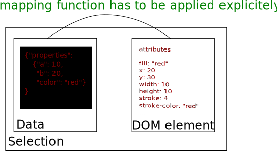
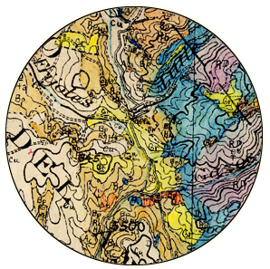
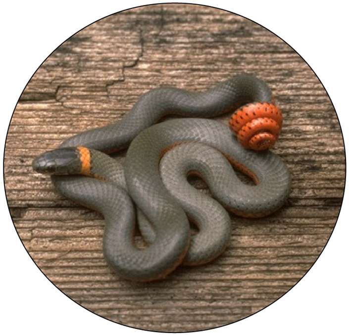
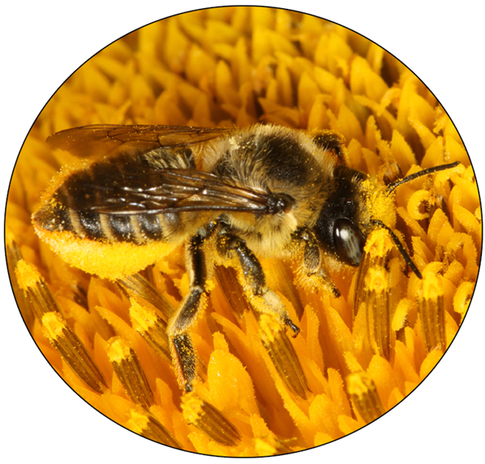

name: agenda layout: true class: left background-image: url(../css/logos.png) --- ## Data Visualization and Mapping with d3.js <br> #### Falk Schuetzenmeister #### Spatial Data Science Bootcamp <br> #### May 22, 2015 --- # Before we start Open a terminal, and #### `cd /home/oski/BootcampMaterials` #### `git clone https://github.com/berkeley-gif/d3tutorial.git` #### `cd d3tutorial` #### `python -m SimpleHTTPServer` #### Open browser at localhost:8000 (Make sure Python is installed. Python's SimpleHTTPServer will serve our local examples.) --- ##[__d3js.org__](http://d3js.org) __Data-Driven Documents__  --- ## bl.ocks.org http://bl.ocks.org * Create a public Gist on [GitHub](https://github.com) that contains at least an `index.html` file * E.g. https://gist.github.com/postfalk/21b539a7a87a97cd1f95 * It will be automatically parsed by http://bl.ocks.org/postfalk/21b539a7a87a97cd1f95 (updated changes will not apply in realtime though) --- ## The world of d3.js ## _and some conclusions for the bootcamp_ <br> #### 1. revisiting mapping (generalized approach) #### 2. revisiting geospatial data (APIs, TopoJSON) #### 3. revisiting geographic story-telling (data journalism) --- ## The New York Times as pioneer in data visualization Let's look at a recent example http://www.nytimes.com/interactive/2015/04/01/us/water-use-in-california.html?ref=us --- ## The New York Times as pioneer in data visualization Let's look at a recent example http://www.nytimes.com/interactive/2015/04/01/us/water-use-in-california.html?ref=us * map frame is gone, map appears in-line in the article * map data is reduced to the essentials (not relying on generalized tilesets) * Web Mercator projection left behind * not a mapping web application but rather a news article/post blog (very little code necessary) --- ## An example geospatial professionals always wished for https://www.jasondavies.com/maps/transition/ --- ## An example geospatial professionals always wished for https://www.jasondavies.com/maps/transition/ * dynamic transitions by changing mapping functions * this example relays on only 200 lines of JS code! * uses functionality of d3.geo (part of the standard d3.js library) --- ## What is d3? * A JavaScript visualization library build on scalable vector graphic (SVG). * Successor of Protovis.js developed by the Stanford Data Visualization group (2009). * Mike Bostock has been the main developer. He works now for the New York Times. * D3 has become the work horse of data journalism and visualization. * For geospatial professionals it provides new ways to think about map making, communication, or even projects. --- ## Revisiting mapping Mapping: An operation that associates each element of a given set (the domain) with one or more elements of a second set (the range).  Any (computer) visualization problem can be described as a mapping problem. Geospatial mapping is just a subset. --- ## Revisiting mapping: Outline <br> <table><tr><td> <img src="img/ca.png" style="height:350px;width:auto;"></img> </td><td> <h4>What will we cover?</h4><br> Scalable Vector Graphics<br> Selectors<br> General Update Pattern<br> Events<br> Transitions<br> RESTful API calls<br> TopoJSON<br> d3.geo<br><br> A map similar to the one you see. </td></tr></table> --- ## Again, what is d3? * d3.js has everything you need for visualizing complex data BUT you will not find commands like barchart, scatterplot, or piechart, or even map * d3.js builds vizualizations (and other content) from its basic HTML5 or SVG elements (e.g. `<g>`, `<circle>`, `<rect>`, `<path>`). * d3.js is most and foremost a DOM manipulation library (in this regard similar to jquery). * d3.js comes with a lot of functions and methods to create _mapping functions_ that will map your data directly to properties on html elements. --- ## Getting started: svg [example](examples/getting_started.html) | [on jsfiddle.net](http://jsfiddle.net/postfalk/unzbproo/1/) ```html <!-- svg canvas starts here--> <svg> <circle cx="40" cy="20" r="10" fill="red"></circle> <circle cx="100" cy="50" r="40" fill="green"></circle> </svg> ``` <svg> <circle cx="40" cy="20" r="10" fill="red"></circle> <circle cx="100" cy="50" r="40" fill="green"></circle> </svg> --- ## Relating data [example](examples/getting_started.html) | [on jsfiddle.net](http://jsfiddle.net/postfalk/unzbproo/1/) ```html <!-- svg canvas starts here--> <svg> <circle cx="40" cy="20" r="10" fill="red"></circle> <circle cx="100" cy="50" r="40" fill="green"></circle> </svg> ``` <svg height="100"> <circle cx="40" cy="20" r="10" fill="red"></circle> <circle cx="100" cy="50" r="40" fill="green"></circle> </svg> <p>Data:</p> | |x-coord |y-coord |radius | |---|----|---|---| |red| 40 | 20 | 10 | |green| 100 |50 | 40 | --- ## Changing scale [example](examples/changing_scale.html) | [on jsfiddle.net](http://jsfiddle.net/postfalk/unzbproo/2/) ```html <svg width="200" height="200"> <g transform="translate(100, 100) scale(.556, -1.111)"> <circle cx="-107.91" cy="71.94" r="10" fill="red"></circle> <circle cx="0" cy="55.55" r="40" fill="green"></circle> </g> </svg> ``` <svg width="200" height="90"> <g transform="translate(100, 100) scale(.556, -1.111)"> <circle cx="-107.91" cy="71.94" r="10" fill="red"></circle> <circle cx="0" cy="55.55" r="40" fill="green"></circle> </g> </svg> Geographic Data: | |longitude |latitude |radius | |---|----|---|---| |red|-107.91|71.94|10| |green|0|55.55|40| --- ## Conclusion [example](examples/changing_scale.html) | [on jsfiddle.net](http://jsfiddle.net/postfalk/unzbproo/2/) ```html <svg width="200" height="200"> <g transform="translate(100, 100) scale(.556, -1.111)"> <circle cx="-107.91" cy="71.94" r="10" fill="red"></circle> <circle cx="0" cy="55.55" r="40" fill="green"></circle> </g> </svg> ``` <svg width="200" height="90"> <g transform="translate(100, 100) scale(.556, -1.111)"> <circle cx="-107.91" cy="71.94" r="10" fill="red"></circle> <circle cx="0" cy="55.55" r="40" fill="green"></circle> </g> </svg> * well this is not a proper projection (will get back to this) * circle size cannot be presented in this coordinate system --- ## Circles with d3.js: empty container [example](examples/empty_container.html) | [on jsfiddle.net](http://jsfiddle.net/postfalk/unzbproo/3/) ``` <body> <div id="canvas"></div> <script src="https://cdnjs.cloudflare.com/ajax/libs/d3/3.5.5/d3.min.js"> </script> <script></script> </body> ``` * html `<body>` is currently mostly empty * it contains a `<div>`-container where we will attach new elements using d3.js * it loads d3.js from a Content Delivery Network (CDN), minimized * it has a script-tag for our code --- ## Circles with d3.js: selectors [example](examples/selectors.html) | [on jsfiddle.net](http://jsfiddle.net/postfalk/unzbproo/4/) ```html <body> <div id="canvas"></div> <script src="https://cdnjs.cloudflare.com/ajax/libs/d3/3.5.5/d3.min.js"> </script> <script> var svg = d3.select('#canvas') .append('svg:svg') .attr('height', 200) .attr('width', 200); </script> </body> ``` will render ```html <div id="canvas"> <svg height="200" width="200"> <div> ``` --- ## Circles with d3.hs: function or method chaining [example](examples/selectors.html) | [on jsfiddle.net](http://jsfiddle.net/postfalk/unzbproo/4/) ```js var modified_object = object.method(); var another_modification = modified_object.another_method(); ``` can be written as ```js var another_modification = object.method().another_method(); ``` --- ## Circles with d3.js: complete example [example](examples/complete_example.html) | [on jsfiddle.net](http://jsfiddle.net/postfalk/unzbproo/5/) ```js var data = [ ['red', '40', '20', '10'], ['green', '100', '50', '40'] ]; var svg = d3.select('#canvas') .append('svg:svg'); svg.selectAll('circle') .data(data) .enter() .append('circle') .attr('cx', function(d) {return d[1]}) .attr('cy', function(d) {return d[2]}) .attr('r', function(d) {return d[3]}) .attr('fill', function(d) {return d[0]}); ``` * data binding is at the core of d3.js --- ## Circles with d3.js: data binding [example](examples/complete_example.html) | [on jsfiddle.net](http://jsfiddle.net/postfalk/unzbproo/5/) </img> --- ## Enter, update, exit: The general update pattern [finalized example 1](example_1) | [online](http://bl.ocks.org/postfalk/78d05e337231a1a94da9) | [on jsfiddle.net](http://jsfiddle.net/postfalk/pn96ca6v/1/) ```js // !!! Pseudo code - will not run // create selection, bind data var selection = d3.select('#canvas').append('svg:svg') .selectAll('circle') .data(data); // create svg elements for new data points selection.enter().append('circle'); // update existing svg elements here (including the ones just created) // d is the data point, i the index selection.attr('color', function(d, i) {return d.color}); // deal with elements no longer covered by data (removal) selection.exit().remove(); ``` --- ## Visualizing what's going on [example](examples/whats_going_on.html) | [on jsfiddle.net](http://jsfiddle.net/postfalk/bz8t2w96/1/) <svg class="my-selection-example" height="300" width="700"> <text x="0" y="50">data</text> <text x="300" y="50">selection</text> <text x="500" y="50">DOM</text> <text x="0" y="85">['red', 'red', 'red']</text> <!--<rect x="0" y="70" width="20" height="20" fill="red"></rect> <rect x="30" y="70" width="20" height="20" fill="red"></rect> <rect x="60" y="70" width="20" height="20" fill="red"></rect>--> </svg> --- ## Visualizing what's going on [example](examples/whats_going_on.html) | [on jsfiddle.net](http://jsfiddle.net/postfalk/bz8t2w96/1/) <svg class="my-selection-example" height="300" width="700"> <text x="0" y="50">data</text> <text x="300" y="50">selection</text> <text x="500" y="50">DOM</text> <text x="0" y="85">['red', 'red', 'red']</text> <!--<rect x="0" y="70" width="20" height="20" fill="red"></rect> <rect x="30" y="70" width="20" height="20" fill="red"></rect> <rect x="60" y="70" width="20" height="20" fill="red"></rect> --> <text x="0" y="180" class="mycode">var svg = d3.select('svg');</text> </svg> --- ## Visualizing what's going on [example](examples/whats_going_on.html) | [on jsfiddle.net](http://jsfiddle.net/postfalk/bz8t2w96/1/) <svg class="my-selection-example" height="300" width="700"> <text x="0" y="50">data</text> <text x="300" y="50">selection</text> <text x="500" y="50">DOM</text> <text x="0" y="85">['red', 'red', 'red']</text> <!--<rect x="0" y="70" width="20" height="20" fill="red"></rect> <rect x="30" y="70" width="20" height="20" fill="red"></rect> <rect x="60" y="70" width="20" height="20" fill="red"></rect> --> <text x="0" y="180" class="mycode">var svg = d3.select('svg');</text> <text x="0" y="220" class="mycode">svg.selectAll('rect');</text> </svg> --- ## Visualizing what's going on [example](examples/whats_going_on.html) | [on jsfiddle.net](http://jsfiddle.net/postfalk/bz8t2w96/1/) <svg class="my-selection-example" height="300" width="700"> <text x="0" y="50">data</text> <text x="300" y="50">selection</text> <text x="500" y="50">DOM</text> <text x="0" y="85">['red', 'red', 'red']</text> <!--<rect x="0" y="70" width="20" height="20" fill="red"></rect> <rect x="30" y="70" width="20" height="20" fill="red"></rect> <rect x="60" y="70" width="20" height="20" fill="red"></rect> --> <rect x="300" y="70" width="20" height="20" fill="grey"></rect> <rect x="330" y="70" width="20" height="20" fill="grey"></rect> <rect x="360" y="70" width="20" height="20" fill="grey"></rect> <text x="0" y="180" class="mycode">var svg = d3.select('svg');</text> <text x="0" y="220" class="mycode">svg.selectAll('rect').data(data);</text> <rect x="0" y="270" width="20" height="20" fill="grey"></rect> <text x="30" y="290">undefined</text> </svg> --- ## Visualizing what's going on [example](examples/whats_going_on.html) | [on jsfiddle.net](http://jsfiddle.net/postfalk/bz8t2w96/1/) <svg class="my-selection-example" height="300" width="700"> <text x="0" y="50">data</text> <text x="300" y="50">selection</text> <text x="500" y="50">DOM</text> <text x="0" y="85">['red', 'red', 'red']</text> <!--<rect x="0" y="70" width="20" height="20" fill="red"></rect> <rect x="30" y="70" width="20" height="20" fill="red"></rect> <rect x="60" y="70" width="20" height="20" fill="red"></rect> --> <rect x="300" y="70" width="20" height="20" fill="white" stroke="red"></rect> <rect x="330" y="70" width="20" height="20" fill="white" stroke="red"></rect> <rect x="360" y="70" width="20" height="20" fill="white" stroke="red"></rect> <text x="0" y="180" class="mycode">var svg = d3.select('svg');</text> <text x="0" y="220" class="mycode">svg.selectAll('rect').data(data).enter();</text> <rect x="0" y="270" width="20" height="20" fill="white" stroke="red"></rect> <text x="30" y="290">object holding data point but no DOM element</text> </svg> --- ## Visualizing what's going on [example](examples/whats_going_on.html) | [on jsfiddle.net](http://jsfiddle.net/postfalk/bz8t2w96/1/) <svg class="my-selection-example" height="300" width="700"> <text x="0" y="50">data</text> <text x="300" y="50">selection</text> <text x="500" y="50">DOM</text> <text x="0" y="85">['red', 'red', 'red']</text> <!--<rect x="0" y="70" width="20" height="20" fill="red"></rect> <rect x="30" y="70" width="20" height="20" fill="red"></rect> <rect x="60" y="70" width="20" height="20" fill="red"></rect> --> <rect x="300" y="70" width="20" height="20" fill="white" stroke="red"></rect> <rect x="330" y="70" width="20" height="20" fill="white" stroke="red"></rect> <rect x="360" y="70" width="20" height="20" fill="white" stroke="red"></rect> <rect x="500" y="70" width="20" height="20" fill="white" stroke="black"></rect> <rect x="530" y="70" width="20" height="20" fill="white" stroke="black"></rect> <rect x="560" y="70" width="20" height="20" fill="white" stroke="black"></rect> <text x="0" y="180" class="mycode">var svg = d3.select('svg');</text> <text x="0" y="220" class="mycode">svg.selectAll('rect').data(data).enter().append('rect');</text> </svg> --- ## Visualizing what's going on [example](examples/whats_going_on.html) | [on jsfiddle.net](http://jsfiddle.net/postfalk/bz8t2w96/1/) <svg class="my-selection-example" height="400" width="700"> <text x="0" y="50">data</text> <text x="300" y="50">selection</text> <text x="500" y="50">DOM</text> <text x="0" y="85">['red', 'red', 'red']</text> <!--<rect x="0" y="70" width="20" height="20" fill="red"></rect> <rect x="30" y="70" width="20" height="20" fill="red"></rect> <rect x="60" y="70" width="20" height="20" fill="red"></rect> --> <rect x="300" y="70" width="20" height="20" fill="red"></rect> <rect x="330" y="70" width="20" height="20" fill="red"></rect> <rect x="360" y="70" width="20" height="20" fill="red"></rect> <rect x="500" y="70" width="20" height="20" fill="red"></rect> <rect x="530" y="70" width="20" height="20" fill="red"></rect> <rect x="560" y="70" width="20" height="20" fill="red"></rect> <text x="0" y="180" class="mycode">var svg = d3.select('svg');</text> <text x="0" y="220" class="mycode">svg.selectAll('rect').data(data).enter().append('rect')</text> <text x="40" y="260" class="mycode">.attr('fill', function(d, i) {return d})</text> <text x="40" y="300" class="mycode">.attr('x', function(d, i) {return i * 30 + 20})</text> <text x="40" y="340" class="mycode">.attr('y', 20)</text> <text x="40" y="380" class="mycode">.attr('height', 20).attr('width', 20);</text> </svg> --- ## Visualizing what's going on [example](examples/whats_going_on.html) | [on jsfiddle.net](http://jsfiddle.net/postfalk/bz8t2w96/2/) <svg class="my-selection-example" height="300" width="700"> <text x="0" y="50">data</text> <text x="300" y="50">selection</text> <text x="500" y="50">DOM</text> <text x="0" y="85">['green', 'green', 'green']</text> <!--<rect x="0" y="70" width="20" height="20" fill="green"></rect> <rect x="30" y="70" width="20" height="20" fill="green"></rect> <rect x="60" y="70" width="20" height="20" fill="green"></rect> --> <rect x="500" y="70" width="20" height="20" fill="red"></rect> <rect x="530" y="70" width="20" height="20" fill="red"></rect> <rect x="560" y="70" width="20" height="20" fill="red"></rect> </svg> --- ## Visualizing what's going on [example](examples/whats_going_on.html) | [on jsfiddle.net](http://jsfiddle.net/postfalk/bz8t2w96/2/) <svg class="my-selection-example" height="300" width="700"> <text x="0" y="50">data</text> <text x="300" y="50">selection</text> <text x="500" y="50">DOM</text> <text x="0" y="85">['green', 'green', 'green']</text> <!--<rect x="0" y="70" width="20" height="20" fill="green"></rect> <rect x="30" y="70" width="20" height="20" fill="green"></rect> <rect x="60" y="70" width="20" height="20" fill="green"></rect> --> <rect x="300" y="70" width="20" height="20" fill="red"></rect> <rect x="330" y="70" width="20" height="20" fill="red"></rect> <rect x="360" y="70" width="20" height="20" fill="red"></rect> <rect x="500" y="70" width="20" height="20" fill="red"></rect> <rect x="530" y="70" width="20" height="20" fill="red"></rect> <rect x="560" y="70" width="20" height="20" fill="red"></rect> <text x="0" y="180" class="mycode">var svg = d3.select('svg');</text> <text x="0" y="220" class="mycode">svg.selectAll('rect');</text> </svg> --- ## Visualizing what's going on [example](examples/whats_going_on.html) | [on jsfiddle.net](http://jsfiddle.net/postfalk/bz8t2w96/2/) <svg class="my-selection-example" height="400" width="700"> <text x="0" y="50">data</text> <text x="300" y="50">selection</text> <text x="500" y="50">DOM</text> <text x="0" y="85">['green', 'green', 'green']</text> <!--<rect x="0" y="70" width="20" height="20" fill="green"></rect> <rect x="30" y="70" width="20" height="20" fill="green"></rect> <rect x="60" y="70" width="20" height="20" fill="green"></rect> --> <rect x="300" y="70" width="20" height="20" fill="red" stroke="green" stroke-width="2"></rect> <rect x="330" y="70" width="20" height="20" fill="red" stroke="green" stroke-width="2"></rect> <rect x="360" y="70" width="20" height="20" fill="red" stroke="green" stroke-width="2"></rect> <rect x="500" y="70" width="20" height="20" fill="red"></rect> <rect x="530" y="70" width="20" height="20" fill="red"></rect> <rect x="560" y="70" width="20" height="20" fill="red"></rect> <text x="0" y="180" class="mycode">var svg = d3.select('svg');</text> <text x="0" y="220" class="mycode">svg.selectAll('rect').data(data);</text> <rect x="0" y="270" width="20" height="20" fill="red" stroke="green" stroke-width="2"></rect> <text x="30" y="290">DOM element and data out of sync until data is mapped</text> </svg> --- ## Visualizing what's going on [example](examples/whats_going_on.html) | [on jsfiddle.net](http://jsfiddle.net/postfalk/bz8t2w96/2/) <svg class="my-selection-example" height="400" width="700"> <text x="0" y="50">data</text> <text x="300" y="50">selection</text> <text x="500" y="50">DOM</text> <text x="0" y="85">['green', 'green', 'green']</text> <!--<rect x="0" y="70" width="20" height="20" fill="green"></rect> <rect x="30" y="70" width="20" height="20" fill="green"></rect> <rect x="60" y="70" width="20" height="20" fill="green"></rect> --> <rect x="300" y="70" width="20" height="20" fill="green"></rect> <rect x="330" y="70" width="20" height="20" fill="green"></rect> <rect x="360" y="70" width="20" height="20" fill="green"></rect> <rect x="500" y="70" width="20" height="20" fill="green"></rect> <rect x="530" y="70" width="20" height="20" fill="green"></rect> <rect x="560" y="70" width="20" height="20" fill="green"></rect> <text x="0" y="180" class="mycode">var svg = d3.select('svg')</text> <text x="0" y="220" class="mycode">svg.selectAll('rect').data(data)</text> <text x="40" y="260" class="mycode">.attr('fill', function(d, i) {return d})</text> <text x="40" y="300" class="mycode">.attr('x', function(d, i) {return i * 30 + 20})</text> <text x="40" y="340" class="mycode">.attr('y', 20)</text> <text x="40" y="380" class="mycode">.attr('height', 20).attr('width', 20);</text> </svg> --- ## Visualizing what's going on [example](examples/whats_going_on.html) | [on jsfiddle.net](http://jsfiddle.net/postfalk/bz8t2w96/3/) <svg class="my-selection-example" height="300" width="700"> <text x="0" y="50">data</text> <text x="300" y="50">selection</text> <text x="500" y="50">DOM</text> <text x="0" y="85">['blue', 'blue', 'blue', 'blue']</text> <!--<rect x="0" y="70" width="20" height="20" fill="blue"></rect> <rect x="30" y="70" width="20" height="20" fill="blue"></rect> <rect x="60" y="70" width="20" height="20" fill="blue"></rect> <rect x="90" y="70" width="20" height="20" fill="blue"></rect> --> <rect x="500" y="70" width="20" height="20" fill="green"></rect> <rect x="530" y="70" width="20" height="20" fill="green"></rect> <rect x="560" y="70" width="20" height="20" fill="green"></rect> </svg> --- ## Visualizing what's going on [example](examples/whats_going_on.html) | [on jsfiddle.net](http://jsfiddle.net/postfalk/bz8t2w96/3/) <svg class="my-selection-example" height="300" width="700"> <text x="0" y="50">data</text> <text x="300" y="50">selection</text> <text x="500" y="50">DOM</text> <text x="0" y="85">['blue', 'blue', 'blue', 'blue']</text> <!--<rect x="0" y="70" width="20" height="20" fill="blue"></rect> <rect x="30" y="70" width="20" height="20" fill="blue"></rect> <rect x="60" y="70" width="20" height="20" fill="blue"></rect> <rect x="90" y="70" width="20" height="20" fill="blue"></rect> --> <rect x="300" y="70" width="20" height="20" fill="green"></rect> <rect x="330" y="70" width="20" height="20" fill="green"></rect> <rect x="360" y="70" width="20" height="20" fill="green"></rect> <rect x="500" y="70" width="20" height="20" fill="green"></rect> <rect x="530" y="70" width="20" height="20" fill="green"></rect> <rect x="560" y="70" width="20" height="20" fill="green"></rect> <text x="0" y="180" class="mycode">var svg = d3.select('svg');</text> <text x="0" y="220" class="mycode">svg.selectAll('rect');</text> </svg> --- ## Visualizing what's going on [example](examples/whats_going_on.html) | [on jsfiddle.net](http://jsfiddle.net/postfalk/bz8t2w96/3/) <svg class="my-selection-example" height="400" width="700"> <text x="0" y="50">data</text> <text x="300" y="50">selection</text> <text x="500" y="50">DOM</text> <text x="0" y="85">['blue', 'blue', 'blue', 'blue']</text> <!--<rect x="0" y="70" width="20" height="20" fill="blue"></rect> <rect x="30" y="70" width="20" height="20" fill="blue"></rect> <rect x="60" y="70" width="20" height="20" fill="blue"></rect> <rect x="90" y="70" width="20" height="20" fill="blue"></rect> --> <rect x="300" y="70" width="20" height="20" fill="green" stroke="blue" stroke-width="2"></rect> <rect x="330" y="70" width="20" height="20" fill="green" stroke="blue" stroke-width="2"></rect> <rect x="360" y="70" width="20" height="20" fill="green" stroke="blue" stroke-width="2"></rect> <rect x="390" y="70" width="20" height="20" fill="grey"></rect> <rect x="500" y="70" width="20" height="20" fill="green"></rect> <rect x="530" y="70" width="20" height="20" fill="green"></rect> <rect x="560" y="70" width="20" height="20" fill="green"></rect> <text x="0" y="180" class="mycode">var svg = d3.select('svg');</text> <text x="0" y="220" class="mycode">svg.selectAll('rect').data(data);</text> <rect x="0" y="270" width="20" height="20" fill="green" stroke="blue" stroke-width="2"></rect> <text x="30" y="290">DOM element and data out of sync until data is mapped</text> <rect x="0" y="300" width="20" height="20" fill="grey"></rect> <text x="30" y="320">undefined</text> </svg> --- ## Visualizing what's going on [example](examples/whats_going_on.html) | [on jsfiddle.net](http://jsfiddle.net/postfalk/bz8t2w96/3/) <svg class="my-selection-example" height="400" width="700"> <text x="0" y="50">data</text> <text x="300" y="50">selection</text> <text x="500" y="50">DOM</text> <text x="0" y="85">['blue', 'blue', 'blue', 'blue']</text> <!--<rect x="0" y="70" width="20" height="20" fill="blue"></rect> <rect x="30" y="70" width="20" height="20" fill="blue"></rect> <rect x="60" y="70" width="20" height="20" fill="blue"></rect> <rect x="90" y="70" width="20" height="20" fill="blue"></rect> --> <rect x="300" y="70" width="20" height="20" fill="grey"></rect> <rect x="330" y="70" width="20" height="20" fill="grey"></rect> <rect x="360" y="70" width="20" height="20" fill="grey"></rect> <rect x="390" y="70" width="20" height="20" fill="white" stroke="blue"></rect> <rect x="500" y="70" width="20" height="20" fill="green"></rect> <rect x="530" y="70" width="20" height="20" fill="green"></rect> <rect x="560" y="70" width="20" height="20" fill="green"></rect> <text x="0" y="180" class="mycode">var svg = d3.select('svg');</text> <text x="0" y="220" class="mycode">svg.selectAll('rect').data(data).enter();</text> <rect x="0" y="270" width="20" height="20" fill="white" stroke="blue"></rect> <text x="30" y="290">object holding data point but no DOM element</text> <rect x="0" y="300" width="20" height="20" fill="grey"></rect> <text x="30" y="320">undefined</text> </svg> --- ## Visualizing what's going on [example](examples/whats_going_on.html) | [on jsfiddle.net](http://jsfiddle.net/postfalk/bz8t2w96/3/) <svg class="my-selection-example" height="400" width="700"> <text x="0" y="50">data</text> <text x="300" y="50">selection</text> <text x="500" y="50">DOM</text> <text x="0" y="85">['blue', 'blue', 'blue', 'blue']</text> <!--<rect x="0" y="70" width="20" height="20" fill="blue"></rect> <rect x="30" y="70" width="20" height="20" fill="blue"></rect> <rect x="60" y="70" width="20" height="20" fill="blue"></rect> <rect x="90" y="70" width="20" height="20" fill="blue"></rect> --> <rect x="300" y="70" width="20" height="20" fill="grey"></rect> <rect x="330" y="70" width="20" height="20" fill="grey"></rect> <rect x="360" y="70" width="20" height="20" fill="grey"></rect> <rect x="390" y="70" width="20" height="20" fill="white" stroke="blue"></rect> <rect x="500" y="70" width="20" height="20" fill="green"></rect> <rect x="530" y="70" width="20" height="20" fill="green"></rect> <rect x="560" y="70" width="20" height="20" fill="green"></rect> <rect x="590" y="70" width="20" height="20" fill="white" stroke="black"></rect> <text x="0" y="180" class="mycode">var svg = d3.select('svg');</text> <text x="0" y="220" class="mycode">svg.selectAll('rect').data(data).enter().append('rect');</text> </svg> --- ## Visualizing what's going on [example](examples/whats_going_on.html) | [on jsfiddle.net](http://jsfiddle.net/postfalk/bz8t2w96/3/) <svg class="my-selection-example" height="400" width="700"> <text x="0" y="50">data</text> <text x="300" y="50">selection</text> <text x="500" y="50">DOM</text> <text x="0" y="85">['blue', 'blue', 'blue', 'blue']</text> <!--<rect x="0" y="70" width="20" height="20" fill="blue"></rect> <rect x="30" y="70" width="20" height="20" fill="blue"></rect> <rect x="60" y="70" width="20" height="20" fill="blue"></rect> <rect x="90" y="70" width="20" height="20" fill="blue"></rect> --> <rect x="300" y="70" width="20" height="20" fill="grey"></rect> <rect x="330" y="70" width="20" height="20" fill="grey"></rect> <rect x="360" y="70" width="20" height="20" fill="grey"></rect> <rect x="390" y="70" width="20" height="20" fill="white" stroke="blue"></rect> <!--<rect x="500" y="70" width="20" height="20" fill="green"></rect> <rect x="530" y="70" width="20" height="20" fill="green"></rect> <rect x="560" y="70" width="20" height="20" fill="green"></rect> <rect x="590" y="70" width="20" height="20" fill="white" stroke="black"></rect> --> <text x="500" y="85">? ? ? ?</text> <text x="0" y="180" class="mycode">var svg = d3.select('svg');</text> <text x="0" y="220" class="mycode">svg.selectAll('rect').data(data).enter().append('rect')</text> <text x="40" y="260" class="mycode">.attr('fill', function(d, i) {return d})</text> <text x="40" y="300" class="mycode">.attr('x', function(d, i) {return i * 30 + 20})</text> <text x="40" y="340" class="mycode">.attr('y', 20)</text> <text x="40" y="380" class="mycode">.attr('height', 20).attr('width', 20);</text> </svg> --- ## Visualizing what's going on [example](examples/whats_going_on.html) | [on jsfiddle.net](http://jsfiddle.net/postfalk/bz8t2w96/4/) <svg class="my-selection-example" height="400" width="700"> <text x="0" y="50">data</text> <text x="300" y="50">selection</text> <text x="500" y="50">DOM</text> <text x="0" y="85">['blue', 'blue', 'blue', 'blue']</text> <!--<rect x="0" y="70" width="20" height="20" fill="blue"></rect> <rect x="30" y="70" width="20" height="20" fill="blue"></rect> <rect x="60" y="70" width="20" height="20" fill="blue"></rect> <rect x="90" y="70" width="20" height="20" fill="blue"></rect> --> <rect x="300" y="70" width="20" height="20" fill="grey"></rect> <rect x="330" y="70" width="20" height="20" fill="grey"></rect> <rect x="360" y="70" width="20" height="20" fill="grey"></rect> <rect x="390" y="70" width="20" height="20" fill="white" stroke="blue"></rect> <rect x="500" y="70" width="20" height="20" fill="green"></rect> <rect x="530" y="70" width="20" height="20" fill="green"></rect> <rect x="560" y="70" width="20" height="20" fill="green"></rect> <rect x="590" y="70" width="20" height="20" fill="blue"></rect> <text x="0" y="180" class="mycode">var svg = d3.select('svg');</text> <text x="0" y="220" class="mycode">svg.selectAll('rect').data(data).enter().append('rect')</text> <text x="40" y="260" class="mycode">.attr('fill', function(d, i) {return d})</text> <text x="40" y="300" class="mycode">.attr('x', function(d, i) {return i * 30 + 20})</text> <text x="40" y="340" class="mycode">.attr('y', 20)</text> <text x="40" y="380" class="mycode">.attr('height', 20).attr('width', 20);</text> </svg> --- ## Visualizing what's going on [example](examples/whats_going_on.html) | [on jsfiddle.net](http://jsfiddle.net/postfalk/bz8t2w96/5/) <svg class="my-selection-example" height="400" width="700"> <text x="0" y="50">data</text> <text x="300" y="50">selection</text> <text x="500" y="50">DOM</text> <text x="0" y="85">[]</text> <!--<rect x="0" y="70" width="20" height="20" fill="blue"></rect> <rect x="30" y="70" width="20" height="20" fill="blue"></rect> <rect x="60" y="70" width="20" height="20" fill="blue"></rect> <rect x="90" y="70" width="20" height="20" fill="blue"></rect> --> <rect x="300" y="70" width="20" height="20" fill="green" stroke="blue" stroke-width="2"></rect> <rect x="330" y="70" width="20" height="20" fill="green" stroke="blue" stroke-width="2"></rect> <rect x="360" y="70" width="20" height="20" fill="green" stroke="blue" stroke-width="2"></rect> <rect x="390" y="70" width="20" height="20" fill="blue"></rect> <rect x="500" y="70" width="20" height="20" fill="green"></rect> <rect x="530" y="70" width="20" height="20" fill="green"></rect> <rect x="560" y="70" width="20" height="20" fill="green"></rect> <rect x="590" y="70" width="20" height="20" fill="blue"></rect> <text x="0" y="180" class="mycode">var svg = d3.select('svg');</text> <text x="0" y="220" class="mycode">svg.selectAll('rect');</text> <rect x="0" y="270" width="20" height="20" fill="green" stroke="blue" stroke-width="2"></rect> <text x="30" y="290">DOM element and data out of sync until data is mapped</text> </svg> --- ## Visualizing what's going on [example](examples/whats_going_on.html) | [on jsfiddle.net](http://jsfiddle.net/postfalk/bz8t2w96/5/) <svg class="my-selection-example" height="400" width="700"> <text x="0" y="50">data</text> <text x="300" y="50">selection</text> <text x="500" y="50">DOM</text> <text x="0" y="85">[]</text> <!--<rect x="0" y="70" width="20" height="20" fill="blue"></rect> <rect x="30" y="70" width="20" height="20" fill="blue"></rect> <rect x="60" y="70" width="20" height="20" fill="blue"></rect> <rect x="90" y="70" width="20" height="20" fill="blue"></rect> --> <rect x="300" y="70" width="20" height="20" fill="blue"></rect> <rect x="330" y="70" width="20" height="20" fill="blue"></rect> <rect x="360" y="70" width="20" height="20" fill="blue"></rect> <rect x="390" y="70" width="20" height="20" fill="blue"></rect> <rect x="500" y="70" width="20" height="20" fill="blue"></rect> <rect x="530" y="70" width="20" height="20" fill="blue"></rect> <rect x="560" y="70" width="20" height="20" fill="blue"></rect> <rect x="590" y="70" width="20" height="20" fill="blue"></rect> <text x="0" y="180" class="mycode">var svg = d3.select('svg');</text> <text x="0" y="220" class="mycode">svg.selectAll('rect')</text> <text x="40" y="260" class="mycode">.attr('fill', function(d, i) {return d})</text> <text x="40" y="300" class="mycode">.attr('x', function(d, i) {return i * 30 + 20})</text> <text x="40" y="340" class="mycode">.attr('y', 20)</text> <text x="40" y="380" class="mycode">.attr('height', 20).attr('width', 20);</text> </svg> --- ## Visualizing what's going on [example](examples/whats_going_on.html) | [on jsfiddle.net](http://jsfiddle.net/postfalk/bz8t2w96/6/) <svg class="my-selection-example" height="400" width="700"> <text x="0" y="50">data</text> <text x="300" y="50">selection</text> <text x="500" y="50">DOM</text> <text x="0" y="85">['orange', 'orange']</text> <!--<rect x="0" y="70" width="20" height="20" fill="blue"></rect> <rect x="30" y="70" width="20" height="20" fill="blue"></rect> <rect x="60" y="70" width="20" height="20" fill="blue"></rect> <rect x="90" y="70" width="20" height="20" fill="blue"></rect> --> <rect x="500" y="70" width="20" height="20" fill="blue"></rect> <rect x="530" y="70" width="20" height="20" fill="blue"></rect> <rect x="560" y="70" width="20" height="20" fill="blue"></rect> <rect x="590" y="70" width="20" height="20" fill="blue"></rect> </svg> --- ## Visualizing what's going on [example](examples/whats_going_on.html) | [on jsfiddle.net](http://jsfiddle.net/postfalk/bz8t2w96/6/) <svg class="my-selection-example" height="400" width="700"> <text x="0" y="50">data</text> <text x="300" y="50">selection</text> <text x="500" y="50">DOM</text> <text x="0" y="85">['orange', 'orange']</text> <!--<rect x="0" y="70" width="20" height="20" fill="blue"></rect> <rect x="30" y="70" width="20" height="20" fill="blue"></rect> <rect x="60" y="70" width="20" height="20" fill="blue"></rect> <rect x="90" y="70" width="20" height="20" fill="blue"></rect> --> <rect x="300" y="70" width="20" height="20" fill="blue"></rect> <rect x="330" y="70" width="20" height="20" fill="blue"></rect> <rect x="360" y="70" width="20" height="20" fill="blue"></rect> <rect x="390" y="70" width="20" height="20" fill="blue"></rect> <rect x="500" y="70" width="20" height="20" fill="blue"></rect> <rect x="530" y="70" width="20" height="20" fill="blue"></rect> <rect x="560" y="70" width="20" height="20" fill="blue"></rect> <rect x="590" y="70" width="20" height="20" fill="blue"></rect> <text x="0" y="180" class="mycode">var svg = d3.select('svg');</text> <text x="0" y="220" class="mycode">svg.selectAll('rect');</text> </svg> --- ## Visualizing what's going on [example](examples/whats_going_on.html) | [on jsfiddle.net](http://jsfiddle.net/postfalk/bz8t2w96/6/) <svg class="my-selection-example" height="400" width="700"> <text x="0" y="50">data</text> <text x="300" y="50">selection</text> <text x="500" y="50">DOM</text> <text x="0" y="85">['orange', 'orange']</text> <!--<rect x="0" y="70" width="20" height="20" fill="blue"></rect> <rect x="30" y="70" width="20" height="20" fill="blue"></rect> <rect x="60" y="70" width="20" height="20" fill="blue"></rect> <rect x="90" y="70" width="20" height="20" fill="blue"></rect> --> <rect x="300" y="70" width="20" height="20" fill="blue" stroke="orange" stroke-width="2"></rect> <rect x="330" y="70" width="20" height="20" fill="blue" stroke="orange" stroke-width="2"></rect> <rect x="500" y="70" width="20" height="20" fill="blue"></rect> <rect x="530" y="70" width="20" height="20" fill="blue"></rect> <rect x="560" y="70" width="20" height="20" fill="blue"></rect> <rect x="590" y="70" width="20" height="20" fill="blue"></rect> <text x="0" y="180" class="mycode">var svg = d3.select('svg');</text> <text x="0" y="220" class="mycode">svg.selectAll('rect').data(data);</text> <rect x="0" y="270" width="20" height="20" fill="blue" stroke="orange" stroke-width="2"></rect> <text x="30" y="290">DOM element and data out of sync until data is mapped</text> </svg> --- ## Visualizing what's going on [example](examples/whats_going_on.html) | [on jsfiddle.net](http://jsfiddle.net/postfalk/bz8t2w96/6/) <svg class="my-selection-example" height="400" width="700"> <text x="0" y="50">data</text> <text x="300" y="50">selection</text> <text x="500" y="50">DOM</text> <text x="0" y="85">['orange', 'orange']</text> <!--<rect x="0" y="70" width="20" height="20" fill="blue"></rect> <rect x="30" y="70" width="20" height="20" fill="blue"></rect> <rect x="60" y="70" width="20" height="20" fill="blue"></rect> <rect x="90" y="70" width="20" height="20" fill="blue"></rect> --> <rect x="300" y="70" width="20" height="20" fill="grey"></rect> <rect x="330" y="70" width="20" height="20" fill="grey"></rect> <rect x="500" y="70" width="20" height="20" fill="blue"></rect> <rect x="530" y="70" width="20" height="20" fill="blue"></rect> <rect x="560" y="70" width="20" height="20" fill="blue"></rect> <rect x="590" y="70" width="20" height="20" fill="blue"></rect> <text x="0" y="180" class="mycode">var svg = d3.select('svg');</text> <text x="0" y="220" class="mycode">svg.selectAll('rect').data(data).enter();</text> <rect x="0" y="270" width="20" height="20" fill="grey"></rect> <text x="30" y="290">undefined</text> </svg> --- ## Visualizing what's going on [example](examples/whats_going_on.html) | [on jsfiddle.net](http://jsfiddle.net/postfalk/bz8t2w96/6/) <svg class="my-selection-example" height="400" width="700"> <text x="0" y="50">data</text> <text x="300" y="50">selection</text> <text x="500" y="50">DOM</text> <text x="0" y="85">['orange', 'orange']</text> <!--<rect x="0" y="70" width="20" height="20" fill="blue"></rect> <rect x="30" y="70" width="20" height="20" fill="blue"></rect> <rect x="60" y="70" width="20" height="20" fill="blue"></rect> <rect x="90" y="70" width="20" height="20" fill="blue"></rect> --> <rect x="300" y="70" width="20" height="20" fill="blue" stroke="orange" stroke-width="2"></rect> <rect x="330" y="70" width="20" height="20" fill="blue" stroke="orange" stroke-width="2"></rect> <rect x="500" y="70" width="20" height="20" fill="blue"></rect> <rect x="530" y="70" width="20" height="20" fill="blue"></rect> <rect x="560" y="70" width="20" height="20" fill="blue"></rect> <rect x="590" y="70" width="20" height="20" fill="blue"></rect> <text x="0" y="180" class="mycode">var svg = d3.select('svg');</text> <text x="0" y="220" class="mycode">svg.selectAll('rect').data(data);</text> <rect x="0" y="270" width="20" height="20" fill="blue" stroke="orange" stroke-width="2"></rect> <text x="30" y="290">DOM element and data out of sync until data is mapped</text> </svg> --- ## Visualizing what's going on [example](examples/whats_going_on.html) | [on jsfiddle.net](http://jsfiddle.net/postfalk/bz8t2w96/6/) <svg class="my-selection-example" height="400" width="700"> <text x="0" y="50">data</text> <text x="300" y="50">selection</text> <text x="500" y="50">DOM</text> <text x="0" y="85">['orange', 'orange']</text> <!--<rect x="0" y="70" width="20" height="20" fill="blue"></rect> <rect x="30" y="70" width="20" height="20" fill="blue"></rect> <rect x="60" y="70" width="20" height="20" fill="blue"></rect> <rect x="90" y="70" width="20" height="20" fill="blue"></rect> --> <rect x="300" y="70" width="20" height="20" fill="grey"></rect> <rect x="330" y="70" width="20" height="20" fill="grey"></rect> <rect x="360" y="70" width="20" height="20" fill="blue"></rect> <rect x="390" y="70" width="20" height="20" fill="blue"></rect> <rect x="500" y="70" width="20" height="20" fill="blue"></rect> <rect x="530" y="70" width="20" height="20" fill="blue"></rect> <rect x="560" y="70" width="20" height="20" fill="blue"></rect> <rect x="590" y="70" width="20" height="20" fill="blue"></rect> <text x="0" y="180" class="mycode">var svg = d3.select('svg');</text> <text x="0" y="220" class="mycode">svg.selectAll('rect').data(data).exit();</text> <rect x="0" y="270" width="20" height="20" fill="grey"></rect> <text x="30" y="290">undefined</text> </svg> --- ## Visualizing what's going on [example](examples/whats_going_on.html) | [on jsfiddle.net](http://jsfiddle.net/postfalk/bz8t2w96/6/) <svg class="my-selection-example" height="400" width="700"> <text x="0" y="50">data</text> <text x="300" y="50">selection</text> <text x="500" y="50">DOM</text> <text x="0" y="85">['orange', 'orange']</text> <!--<rect x="0" y="70" width="20" height="20" fill="blue"></rect> <rect x="30" y="70" width="20" height="20" fill="blue"></rect> <rect x="60" y="70" width="20" height="20" fill="blue"></rect> <rect x="90" y="70" width="20" height="20" fill="blue"></rect> --> <rect x="300" y="70" width="20" height="20" fill="grey"></rect> <rect x="330" y="70" width="20" height="20" fill="grey"></rect> <rect x="360" y="70" width="20" height="20" fill="blue"></rect> <rect x="390" y="70" width="20" height="20" fill="blue"></rect> <rect x="500" y="70" width="20" height="20" fill="blue"></rect> <rect x="530" y="70" width="20" height="20" fill="blue"></rect> <text x="0" y="180" class="mycode">var svg = d3.select('svg');</text> <text x="0" y="220" class="mycode">svg.selectAll('rect').data(data).exit().remove();</text> <rect x="0" y="270" width="20" height="20" fill="grey"></rect> <text x="30" y="290">undefined</text> </svg> --- ## Visualizing what's going on [example](examples/whats_going_on.html) | [on jsfiddle.net](http://jsfiddle.net/postfalk/bz8t2w96/7/) <svg class="my-selection-example" height="400" width="700"> <text x="0" y="50">data</text> <text x="300" y="50">selection</text> <text x="500" y="50">DOM</text> <text x="0" y="85">[]</text> <!--<rect x="0" y="70" width="20" height="20" fill="blue"></rect> <rect x="30" y="70" width="20" height="20" fill="blue"></rect> <rect x="60" y="70" width="20" height="20" fill="blue"></rect> <rect x="90" y="70" width="20" height="20" fill="blue"></rect> --> <rect x="300" y="70" width="20" height="20" fill="blue" stroke="orange" stroke-width="2"></rect> <rect x="330" y="70" width="20" height="20" fill="blue" stroke="orange" stroke-width="2"></rect> <rect x="500" y="70" width="20" height="20" fill="blue"></rect> <rect x="530" y="70" width="20" height="20" fill="blue"></rect> <text x="0" y="180" class="mycode">var svg = d3.select('svg');</text> <text x="0" y="220" class="mycode">svg.selectAll('rect');</text> <rect x="0" y="270" width="20" height="20" fill="blue" stroke="orange" stroke-width="2"></rect> <text x="30" y="290">DOM element and data out of sync until data is mapped</text> </svg> --- ## Visualizing what's going on [example](examples/whats_going_on.html) | [on jsfiddle.net](http://jsfiddle.net/postfalk/bz8t2w96/7/) <svg class="my-selection-example" height="400" width="700"> <text x="0" y="50">data</text> <text x="300" y="50">selection</text> <text x="500" y="50">DOM</text> <text x="0" y="85">[]</text> <!--<rect x="0" y="70" width="20" height="20" fill="blue"></rect> <rect x="30" y="70" width="20" height="20" fill="blue"></rect> <rect x="60" y="70" width="20" height="20" fill="blue"></rect> <rect x="90" y="70" width="20" height="20" fill="blue"></rect> --> <rect x="300" y="70" width="20" height="20" fill="orange"></rect> <rect x="330" y="70" width="20" height="20" fill="orange"></rect> <rect x="500" y="70" width="20" height="20" fill="orange"></rect> <rect x="530" y="70" width="20" height="20" fill="orange"></rect> <text x="0" y="180" class="mycode">var svg = d3.select('svg');</text> <text x="0" y="220" class="mycode">svg.selectAll('rect')</text> <text x="40" y="260" class="mycode">.attr('fill', function(d, i) {return d})</text> <text x="40" y="300" class="mycode">.attr('x', function(d, i) {return i * 30 + 20})</text> <text x="40" y="340" class="mycode">.attr('y', 20)</text> <text x="40" y="380" class="mycode">.attr('height', 20).attr('width', 20);</text> </svg> --- ## Making it compact [example](examples/making_it_compact.html) | [on jsfiddle.net](http://jsfiddle.net/postfalk/bz8t2w96/8/) ``` var data = ['red', 'green', 'blue']; var svg = d3.select('#canvas').append('svg'); var rects = svg.selectAll('rect').data(data); rects.enter().append('rect'); rects.exit().remove(); rects.attr('fill', function(d, i) {return d}) .attr('x', function(d, i) {return i * 30 + 20}) .attr('y', 20) .attr('height', 20) .attr('width', 20); ``` --- ## Making it interactive [example](examples/making_it_interactive.html) | [on jsfiddle.net](http://jsfiddle.net/postfalk/bz8t2w96/9/) * using events, e.g. mouse click ``` svg.selectAll('rect').on('click', function(d, i) {alert(d, i)}); ``` * wrapping the update pattern into a function so that it can be called whenever an event is triggered * event → manipulate data → update visualization * callback function is a function that is passed as an argument to another function and called inside this second function [finalized example 1 ](example_1) | [online](http://bl.ocks.org/postfalk/78d05e337231a1a94da9) --- ## A complete visualization example using API data [finalized example 2](example_2) | [online](http://bl.ocks.org/postfalk/3d9a789ebfa4bf9b8c7d) #### Goals: * seeing real data at work * scales * transformations --- ## What is a RESTful API? * look it up at [Wikipedia](http://en.wikipedia.org/wiki/Representational_state_transfer)! * for our practical concerns: it is a machine-readable, and query-able presentation of data on the internet * directly accessible through applications and coding languages * Fully utilizing the HTTP protocol with its GET, POST and other verbs * queries are presented by URLs (at least for GET requests), state is fully represented by URL --- ## APIs: The Berkeley Ecoinformatics Engine as an example [portal](https://holos.berkeley.edu) | [API](https://ecoengine.berkeley.edu) * the Berkeley Ecoinformatics Engine serves Natural History Data from UC Berkeley, https://ecoengine.berkeley.edu * it has over 5,000,000 records from various collections, as well as Photos, and other georeferenced data </img> </img> </img> </img> </img> </img> </img> --- ## APIs: The Berkeley Ecoinformatics Engine [portal](https://holos.berkeley.edu) | [API](https://ecoengine.berkeley.edu) * We will use the search endpoint for a quick visualization https://ecoengine.berkeley.edu/api/search/ * We can easily query for a genus https://ecoengine.berkeley.edu/api/search/?q=puma * Query language specific to API's - Read documentation! https://ecoengine.berkeley.edu/docs/ * Many APIs require authorization or limit use, EcoEngine is open! --- ## APIs: The Berkeley Ecoinformatics Engine [portal](https://holos.berkeley.edu) | [API](https://ecoengine.berkeley.edu) * Let's visualize the count of the geni puma, lynx, canis, and alligator over states and provinces <a href="https://ecoengine.berkeley.edu/api/photos/CalPhotos%3A6666%2B6666%2B0413%2B0037/"></img></a> <a href="https://ecoengine.berkeley.edu/api/photos/CalPhotos%3A6666%2B6666%2B0413%2B0045/"></img></a> <a href="https://ecoengine.berkeley.edu/api/photos/CalPhotos%3A8235%2B3181%2B2559%2B0098/"></img></a> <a href="https://ecoengine.berkeley.edu/api/photos/CalPhotos%3A0000%2B0000%2B0901%2B0625/"></img></a><br> Photos from [Calphotos](http://calphotos.berkeley.edu): Corsi and Corsi, Corsi and Corsi, Ingles, Flaxington --- ## Sending an API request using d3.js [example](examples/api_request.html) | [on jsfiddle.net](http://jsfiddle.net/postfalk/05wa7upk/1/) ```js var url = "https://ecoengine.berkeley.edu/api/search/?q=puma"; d3.json(url, function(error, data) { if (error) alert('Something went wrong!') else { console.log(data); } }) ``` * you should see your data in the console * navigate JSON: `data.fields.state_province`, see [here](http://jsfiddle.net/postfalk/05wa7upk/2/) * let's go back to the [example](http://bl.ocks.org/postfalk/3d9a789ebfa4bf9b8c7d) --- ## Scales [example](examples/scales.html) | [on jsfiddle.net](http://jsfiddle.net/postfalk/05wa7upk/3/) * Remember the earlier [mapping slide](#11)? Provide domain and range to create a scale. ```js var temperature_scale = d3.scale.linear() .domain([-273, 1000]) .range([0, 400]); // will return the pixel value for 0 and 100 Celsius console.log(temperature_scale(0), temperature_scale(100)); var color_scale = d3.scale.linear() .domain([-273, 1000]) .range(['darkblue', 'darkred']); // will return the color code on the color gradient console.log(color_scale(800)); var categorial_scale = d3.scale.ordinal() .domain(['apples', 'oranges', 'bananas', 'plumes']) .rangePoints([0, 400]); // will return the point where oranges should go console.log(categorial_scale('oranges')); ``` --- ## Adding transitions [finalized example 3](example_3) | [online](http://bl.ocks.org/postfalk/bcf01af7bd0381c5b0ca) * transitions are animations between two states * they are relatively easy to use * different functions are available * transition functions can be custom-functions * transition time can be set --- ## Transitions: simple example [example](examples/transition.html) | [on jsfiddle.net](http://jsfiddle.net/postfalk/05wa7upk/4/) ```js d3.selectAll('rect') .transition() .delay(1000) .duration(4000) .attr('x', 400) ``` --- ## d3.geo: Revisiting geographic data [finalized example 4](example_4) | [online](http://bl.ocks.org/postfalk/e56de3bb77c87c43c4a5) * internet bandwidth is still the biggest hurdle in client side map rendering * web mapping relies on smart technologies to minimize the data transferred, such as * new data formats (e.g. TopoJSON) * API's that allow for data querying, subsetting by viewport, adjusting resolution depending on demand, reprojecting on the fly, etc. * Many cloud services provide this functionality out of the box once you upload your data (e.g. CartoDB, MapSense) --- ## Example relies on TopoJSON [finalized example 4](example_4) | [online](http://bl.ocks.org/postfalk/e56de3bb77c87c43c4a5) * TopoJSON created within the d3 ecosystem * compare: | | | | ------------------------------ | ------------ | | CA_Counties.shp | 5.7 Mbyte | | GeoJSON (simplified to 100m) | 1.1 Mbyte | | TopoJSON | 0.14 Mbyte | * conversion tools see http://bost.ocks.org/mike/map/ --- ## What about precision? [finalized example 4](example_4) | [online](http://bl.ocks.org/postfalk/e56de3bb77c87c43c4a5) * Yes, there is a fair amount of data reduction (but you still have the original Shapefile) * Create a pipeline from your archival files to formats that suits your presentation (ideally in code) * Unfortunately typical in GIS: coordinates like -123.32332441448, well those are nanometers! Almost half of your GIS data are useless digits that are created by conversions * Your data will end up on a screen with 1200 x 1200 pixels at best --- ## What does TopoJSON do? [finalized example 4](example_4) | [online](http://bl.ocks.org/postfalk/e56de3bb77c87c43c4a5) * Reduce duplicate arcs on the boundaries of neighboring features, store coordinates of arcs seperately, reference them by identifiers * Subtract the common offset of all coordinates and store them as transitions, e.g. for CA you can subtract -124.41 and 32.53 from all longitude and latitude values * Snap vertices to a grid of reasonable precision, store the distance between grid cells as zoom factor and refer to coordinates by integer numbers. In our example: it is about 0.001 degree which is between 90 and 110m [our TopoJSON example](example_4/ca_counties.json) Why didn't we do this earlier? Computing power is required to reverse transitions on the fly. --- ## Building up the mapping function [finalized example 4](example_4) | [online](http://bl.ocks.org/postfalk/e56de3bb77c87c43c4a5) * assuming lat/long as input domain * picking a projection https://github.com/mbostock/d3/wiki/Geo-Projections * there is a fair amount of standard projections but projections can also be build from parameters found in .prj file or projection strings, EPSG not supported * adding parameters how projection relates to your SVG canvas * GeoJSON can be directly passed to the resulting path function, that will create `<path>`. --- ## Building up the mapping function [finalized example 4](example_4) | [online](http://bl.ocks.org/postfalk/e56de3bb77c87c43c4a5) ```js // remapping TopoJSON back to GeoJSON var projection = d3.geo.mercator() .scale(2000) .center([-119.5, 37.15]) .translate([width/2, height/2]); // creating path function var path = d3.geo.path().projection(projection); // further down, we can set the data attribute on the path using this function svg.selectAll('.counties') .data(counties.features) .enter().append('path') .attr('d', path) ``` --- ## Making d3.js easier * [c3.js](http://c3js.org/), [NVD3](http://nvd3.org/) and many [more](http://mikemcdearmon.com/portfolio/techposts/charting-libraries-using-d3) provide prepackaged charts * [DataMaps](http://datamaps.github.io/) for creating d3 maps quickly * [Epoch](http://fastly.github.io/epoch/) for real time data. Sensors might be the next big think! --- ## Conclusion: Revisiting Geographic Storytelling * The One-stop-shop approach for GIS data does not work very well * Different requirements for data collections, data processing, data analyzes, and presentation * Or: big data and small devices --- ## Requirements for a new GIS world * This situation requires flexible data stores that can deliver customized selection of data (e.g. API's) * Many data management and data processing problems have been solved before, explore existing solutions, e.g. ESRI ArcMap, CartoDB, MapSense, or MapBox can do many things * They can effectively deliver context to your visualizations --- ## Where you can stand out is presenting data beautifully and quickly. * Data and web presentation of data have extremely different life-cycles (longer, very short). * Develop data assets and web presentations separately, your app will look aged quickly, your data can be useful for a long time. --- ## D3 and its ecosystem is very well geared toward data journalism. * Convey _messages_ with data and visualizations * Do you really need a big web application or would a quick communication of some interesting aspect of your data be more effective? --- # Thank you very much. <br> * File additional questions as issues on GitHub https://github.com/berkeley-gif/d3tutorial<br>(I will try to answer them for the next two weeks.) * I will NOT guarantee the existence of the jsfiddles or the bl.ocks.org examples BUT they are all on your disk (take them home!) * [d3js.org](http://d3js.org/) opens up an entire universe http://bl.ocks.org/mapsense-examples/raw/58521fb48c68027c7b96/ <!-- NEXT SLIDE -->